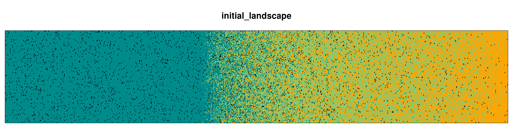
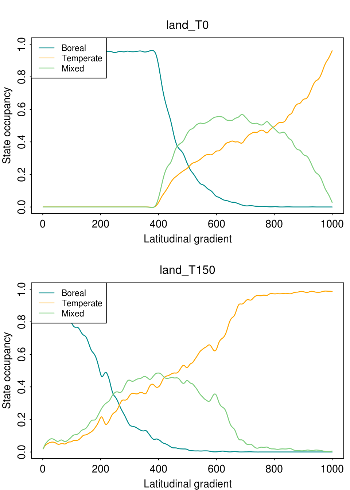
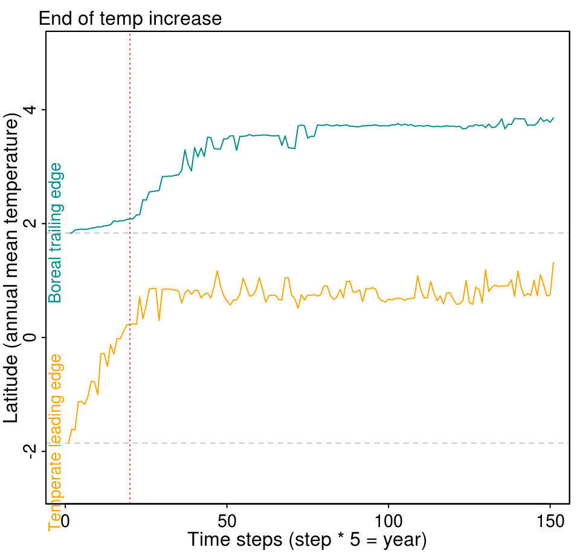

The goal of the STManaged package is to wrap the State and transition model for the eastern North American forest extended with forest management practices. I will describe here step by step all the functionality of the package from the initialization of the model to plotting outputs.
There will be four steps:
- initiate the landscape
- run the model
- plot the output dynamic
- animate the output dynamic
Initiate the landscape
To initiate the landscape let’s first define the environmental gradient in which we are going to run the model. A latitudinal gradient will be created using the temperature variation from colder temperature (north) to warmer temperature (south). Annual mean temperature must be between -5.3 and 12.2 \(^\circ\)C to respect the parameterization boundary.
The second argument is the size of cells of the landscape, in Km\(^2\). We recommend not to exceed the limits of 0.3 to 4 km\(^2\). Cells smaller than 0.3 km\(^2\) will be time and memory consuming, and cells larger than 4 km\(^2\) may overestimate dispersion (there’s a sensitivity analysis for cell size here).
initLand is a list of 6 objects with information about the landscape. land informing which forest states is present in each cell, env1 storing the (scaled) temperature gradient and nCol and nRow to inform the landscape dimension. The other two objects have information about cells neighbor to be used internally.
str(initLand[1:4])
#> List of 4
#> $ land: Named int [1:100000] 1 1 1 1 1 1 1 1 1 1 ...
#> ..- attr(*, "names")= chr [1:100000] "1" "2" "3" "4" ...
#> $ env1: num [1:1000] -2.46 -2.46 -2.46 -2.45 -2.45 ...
#> $ nCol: num 1000
#> $ nRow: num 100Let’s take a look in the initLand using the function plot_landscape():

Run the model
With the initial landscape set, we can now run the model using the function run_model(). This function has many arguments and I will discuss the important ones here. First we need to define the number of steps we want the model to run. Note that one time step in the model means 5 years of forest dynamics. So let’s set the model to run for 500 years:
Now we have to set the forest management practices. We implemented four management practices that aim to favor temperate forest, and therefore increase forest range limits shift northward. (i) Plantation of temperate forest in empty plots present in the boreal region; (ii) harvest of boreal plots; (iii) selective thinning of boreal species present in mixed plots and (iv) enrichment planting of temperate species in boreal plots. The intensity of each management practice varies from 0 to 1. Here we define an intensity of 0.15 for plantation, which means that 15% of empty plots (regeneration state) will become temperate plots:
The next argument is RCP. We define the warming temperature scenario for 4.5 which means an increase of 1.8\(^\circ\)C for the next 100 years:
By default, the model is stochastic (stoch = TRUE) and it will run in only one core (no parallel: cores = 1):
The model output lands is a list of all individual land steps and other useful information such as (i) scaled temperature gradient, (ii) steps, (iii) management intensity, (iv) RCP scenario and (v) landscape dimensions.
Plot output
Forest state occupancy
First we can plot the occupancy of the forest states over the temperature gradient for one specific time step using the function plot_occupancy(). With this function we can see how the state occupancy changed over two or more steps, and an idea of the range limits shift. This function takes the output lands, the step we want to plot (note if we plot more than one step, we need to set mfrow accordingly) and a smoothing value (spar) from 0 (no smooth) to 1. So let’s plot the first and last time step:
par(mfrow = c(2, 1), cex = 0.9)
plot_occupancy(lands, step = 0, spar = 0.4)
plot_occupancy(lands, step = 150, spar = 0.4)
Range Limit shift
Another possibility is to evaluate how the range limit of forest states changes over time. For that we will use the range_limit() function that is integrated in the plot_rangeShift() function. The latter needs only the lands object and a threshold rangeLimitOccup defining the minimum occupancy a row of the landscape that must be occupied by the state to be considered part of the state distribution. This argument calculates the boreal trailing edge and temperate leading edge. The red dotted line shows the moment when the temperature increase due to climate change ends.

Animation
Finally we can animate the spatiotemporal dynamic of the model using the animate() function. This function needs the output lands, the increment value stepsBy, the frames per second fps and also the rangeLimitOccup argument in case we want to print a line with the both boreal and temperate range limits.